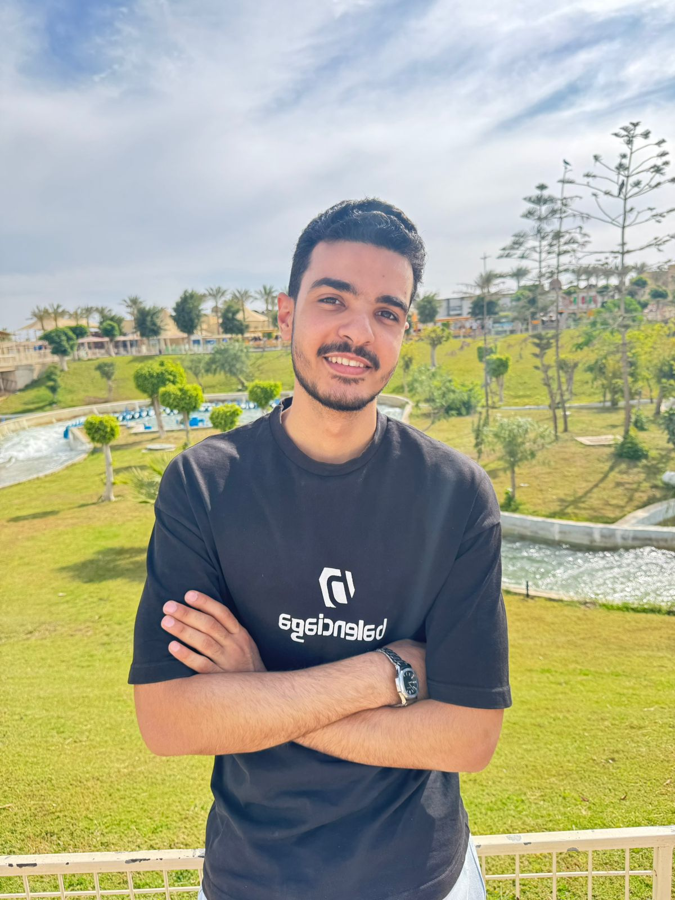

Aspiring Data Science Engineer
Final-year Computer Science student specializing in Data Science, with hands-on experience in NLP, Computer Vision, Multimodal AI, RAG, and data analysis.
About Me
I'm Mohamed Ayman Suleiman, a final-year Computer Science student deeply passionate about Artificial Intelligence and Deep Learning. My journey in this field started with an interest in how data and models can solve real-world problems, and I decided to take it seriously by specializing in Data Science at Helwan National University.
Since then, I've worked on projects across NLP, Computer Vision, Multimodal AI, and RAG pipelines, as well as data analysis and dashboards. These projects helped me move from learning concepts to building complete, practical systems.
Alongside university, I've completed training and certifications with NTI, Route Academy, NVIDIA, BUE, and DEPI, gaining more hands-on experience in AI and data science.
I continue learning through research papers, experiments, and personal projects. I also share my work on LinkedIn and GitHub, and I'm always open to learning opportunities and collaboration on challenging projects. I'm ready — let's talk.
Education
B.Sc. in Computer Science — Data Science Track
Helwan National University | Jan 2024 – Present | Expected Graduation: 2027
CGPA: 3.3
Training Experience
AI for Business Trainee — NTI | 120 Hours
- Applied machine learning models to real-world business datasets.
- Worked on practical assignments covering model evaluation, deployment, and AI solutions.
Data Analytics Trainee — NTI / ITIDA | 120 Hours
- Worked with Python, Excel, Power BI, data cleaning, ETL, and visualization.
- Built practical dashboards and extracted business insights from data.
Skills
Programming & Core
- Python
- Java
- C
- C++
- R
- SQL
- Object-Oriented Programming
- Data Structures & Algorithms
AI / ML Frameworks
- TensorFlow
- PyTorch
- Keras
- Scikit-learn
- LangChain
- LlamaIndex
- ChromaDB
- Ollama
- FastAPI
- Flask
Deep Learning Specializations
- NLP (Transformers, BERT, LSTM, GRU)
- Computer Vision (OpenCV, YOLOv8, MediaPipe)
- Multimodal AI
- LLMs & RAG
Data & Infrastructure
- Power BI
- Excel
- Pandas
- DuckDB
- MySQL
- SQLite
- MongoDB
- Streamlit
- Docker
- Scrapy & BeautifulSoup
Projects
QueryMind AI — Safe Local Data Assistant Individual Project
Python · Streamlit · DuckDB · Ollama · SQLGlot · Scikit-learn · Plotly
- Built a local assistant for answering English and Arabic questions over e-commerce, CSV, and Excel data.
- Developed a Text-to-SQL pipeline with schema retrieval, SQL validation, read-only DuckDB execution, and automatic repair.
- Added automatic routing for text answers, data tables, and interactive Plotly charts.
Kvasir-SEG Multi U-Net Comparison
Python · PyTorch · U-Net · Attention U-Net · U-Net++ · Streamlit
- Built a consistent workflow to train and compare four U-Net-style segmentation models.
- Reached a best validation Dice of 0.793 and IoU of 0.686 by epoch 22.
- Developed a Streamlit viewer for prediction overlays, probability maps, and model-voting results.
MedChat — Pharmacy AI Assistant Team Project
TensorFlow · Transformers (AraBERT) · Flask · Scikit-learn · LlamaIndex · LLM
- Fine-tuned AraBERT and BERT models to classify patient queries by safety risk.
- Built a Flask API and curated Arabic safety data for training and evaluation.
- Integrated the safety model into the team's RAG pipeline and achieved 92% F1-score on a held-out test set.
Contact
Cairo, Egypt | 01281079916 | mohmdwe75@gmail.com